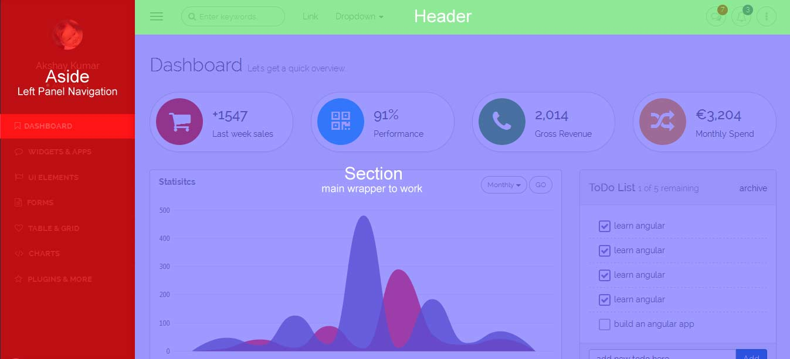
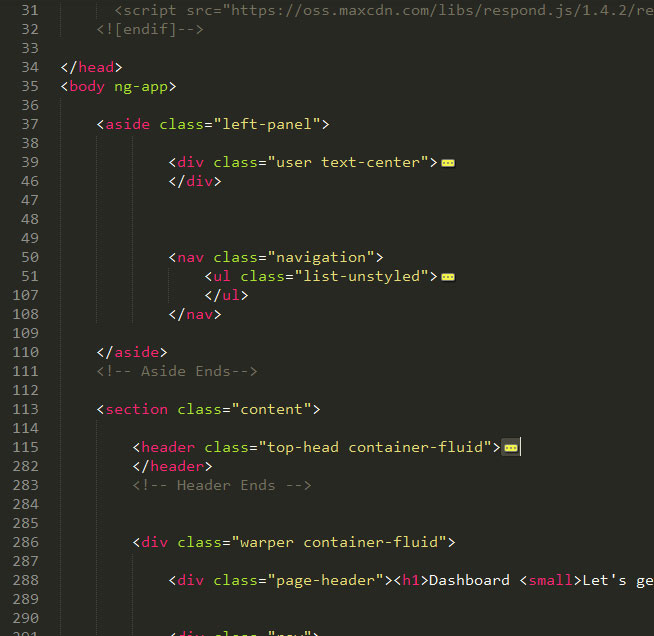

Created: 12/11/2014
By: Akshay Kumar
Email: akshay_thakur05@yahoo.com
Thank you for purchasing my theme. If you have any questions that are beyond the scope of this help file, please feel free to email via my user page contact form here. Thanks so much!
This theme is a responsive layout with two columns. The first column is "Aside" and the second one is "Section". Aside is left navigation panel, and the section is main work ared, section includes header(top bar) & Footer. Section includes "wrapper" which is the main section where you have to work. The general template structure is the same throughout the template. Here is the general structure.
you dont have to worry about understanding the code, code is writen is such a way that every snipt is guide in itself
Bootstrap includes a responsive, mobile first fluid grid system that appropriately scales up to 12 columns as the device or viewport size increases. It includes predefined classes for easy layout options, as well as powerful mixins for generating more semantic layouts.
Introduction
Grid systems are used for creating page layouts through a series of rows and columns that house your content. Here's how the Bootstrap grid system works:
.container (fixed-width) or .container-fluid (full-width) for proper alignment and padding..row and .col-xs-4 are available for quickly making grid layouts. Less mixins can also be used for more semantic layouts.padding. That padding is offset in rows for the first and last column via negative margin on .rows..col-xs-4..col-md- class to an element will not only affect its styling on medium devices but also on large devices if a .col-lg- class is not present.Media queries
We use the following media queries in our Less files to create the key breakpoints in our grid system.
/* Extra small devices (phones, less than 768px) */
/* No media query since this is the default in Bootstrap */
/* Small devices (tablets, 768px and up) */
@media (min-width: @screen-sm-min) { ... }
/* Medium devices (desktops, 992px and up) */
@media (min-width: @screen-md-min) { ... }
/* Large devices (large desktops, 1200px and up) */
@media (min-width: @screen-lg-min) { ... }
We occasionally expand on these media queries to include a max-width to limit CSS to a narrower set of devices.
@media (max-width: @screen-xs-max) { ... }
@media (min-width: @screen-sm-min) and (max-width: @screen-sm-max) { ... }
@media (min-width: @screen-md-min) and (max-width: @screen-md-max) { ... }
@media (min-width: @screen-lg-min) { ... }
Grid options
See how aspects of the Bootstrap grid system work across multiple devices with a handy table.
| Extra small devices Phones (<768px) | Small devices Tablets (≥768px) | Medium devices Desktops (≥992px) | Large devices Desktops (≥1200px) | |
|---|---|---|---|---|
| Grid behavior | Horizontal at all times | Collapsed to start, horizontal above breakpoints | ||
| Container width | None (auto) | 750px | 970px | 1170px |
| Class prefix | .col-xs- |
.col-sm- |
.col-md- |
.col-lg- |
| # of columns | 12 | |||
| Column width | Auto | ~62px | ~81px | ~97px |
| Gutter width | 30px (15px on each side of a column) | |||
| Nestable | Yes | |||
| Offsets | Yes | |||
| Column ordering | Yes | |||
We have used bootstarp for css framework, Bootstrap is the most popular HTML, CSS, and JS framework for developing responsive, mobile first projects on the web. Main css file is app.*version-name*.css this contains all external stying and overlaping bootstarp.
All app css exists in assets/css/app folder, and the css used for plugins exists in plugin folder
There are 5 folders in css
We have used many javascript files but all are managed fron custom.js. and if there is any kind of plugin we are useing so the configration file exists in same folder like pluginName.conf.js
Javascript files structure is :
in custom.js file all code is well commented to understand it in better way
/********************************
Aside Navigation Menu
********************************/
$("aside.left-panel nav.navigation > ul > li:has(ul)").click(function(){
if( $("aside.left-panel").hasClass('collapsed') == false || $(window).width() < 768 ){
if(!$(this).find("ul").is(':visible')){
$(this).siblings().find("ul").slideUp(300);
$(this).siblings().removeClass('active');
}
$(this).addClass('active').find("ul").slideToggle(300,function(){
$("aside.left-panel:not(.collapsed)").getNiceScroll().resize(); });
}
});
/********************************
popover
********************************/
if( $.isFunction($.fn.popover) ){
$('.popover-btn').popover();
}
/********************************
tooltip
********************************/
if( $.isFunction($.fn.tooltip) ){
$('.tooltip-btn').tooltip()
}
I've used the following, for any kind of help or bugs check out there website
Once again, thank you so much for purchasing this theme. As I said at the beginning, I'd be glad to help you if you have any questions relating to this theme. No guarantees, but I'll do my best to assist. If you have a more general question relating to the themes on ThemeForest, you might consider visiting the forums and asking your question in the "Item Discussion" section.
Akshay Kumar